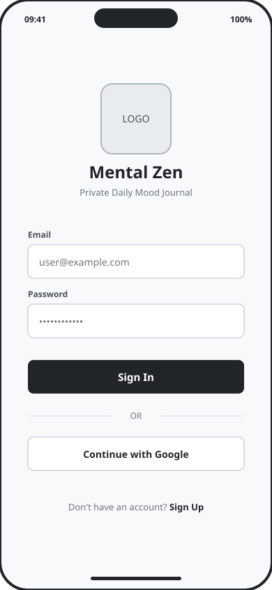
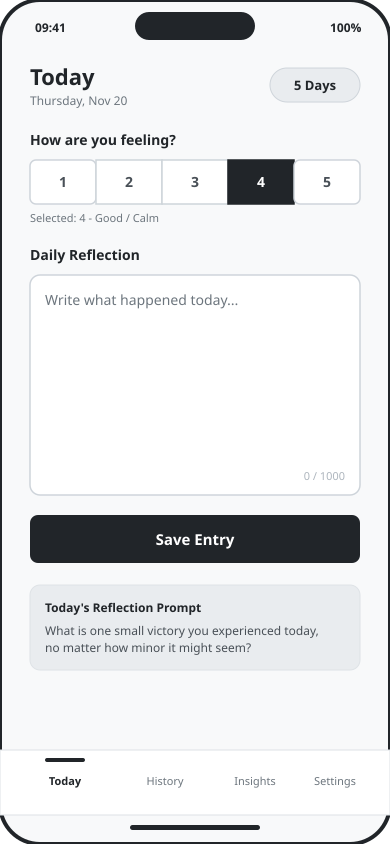
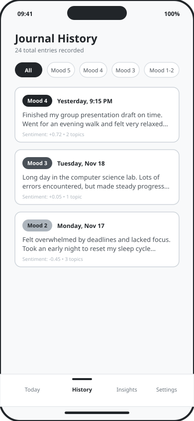
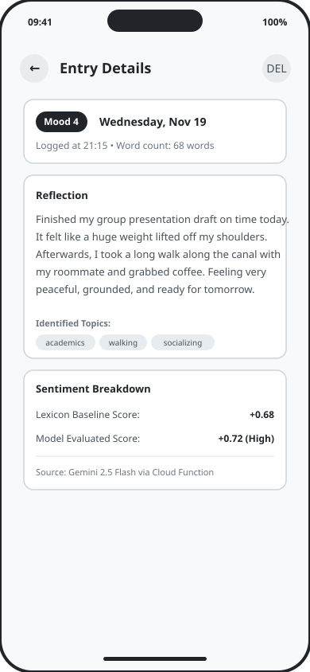
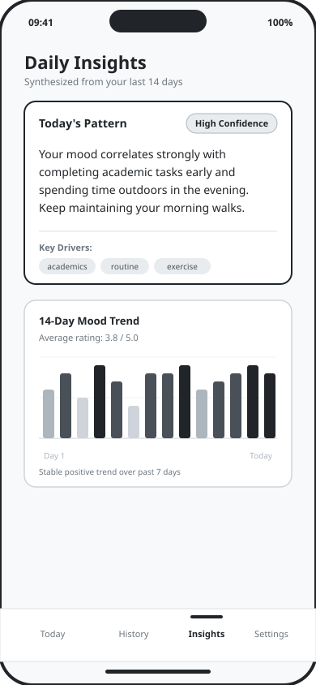

Mental Zen — Project Proposal
1. Team Information
Team Member Roster
| Name | GitHub Handle | Role | Owned Scope |
|---|---|---|---|
| [FILL name] | ikmroadrunnerllc-cmd | Lead Developer (Solo) | Complete architectural design, Flutter client implementation, Firebase integration, offline baseline lexicon engine, and end-to-end testing across all project phases. |
Project Summary
Mental Zen is a private, Android-first personal mood journal developed for undergraduate students seeking mindful daily reflection. Users record an entry each day featuring a discrete 1-to-5 mood evaluation accompanied by an optional reflective journal entry of up to 1000 characters. The system tracks continuous daily journaling consistency through an automated streak counter and presents chronological entry history with filterable emotional trends. Each day, an actionable reflection card synthesizes recent emotional patterns from the previous 14 days without transmitting raw historical entry prose to third-party endpoints. Robust data protection is enforced directly at the backend boundary via owner-only Firestore security rules, while an offline-first architecture pairs a local Dart lexicon scorer with an optional server-side Cloud Function to provide deterministic fallbacks whenever network connectivity drops.
Repository & Academic Integrity Statement
- Repository URL: https://github.com/ikmroadrunnerllc-cmd/mental-zen
- Signed Contribution Statement: Staged at
docs/statements/member.mdwith required placeholders for verification and grading.
2. Wireframe and Design
The user interface mockups are rendered as standalone, grayscale 390x844 SVG specifications adhering strictly to Material 3 design guidelines and accessibility standards.






Screen Descriptions & State Specifications
- Screen 01: Sign In (
01-signin.svg): Authenticates users via email/password or federated Google Sign-In. States include clean empty inputs, loading spinner with disabled buttons, inline validation errors on malformed email or short passwords, and offline detection banner. - Screen 02: Today / Composer (
02-today.svg): Daily hub for rating mood (1-5) via segmented buttons and typing up to 1000 characters. States include empty prompt state, saving progress state, missing-mood validation highlighting, and an offline banner indicating local storage persistence. - Screen 03: History (
03-history.svg): Chronological journal entries with mood rating pills and mood filter chips. States include empty placeholder ("No journal entries yet"), skeleton loading cards, error retry banner, and cached offline read state. - Screen 04: Entry Detail (
04-entry-detail.svg): Complete view of a saved reflection, displaying identified topics, word count, baseline sentiment vs. model rating, and delete action. - Screen 05: Daily Insights (
05-insight.svg): Featured pattern recognition card and 14-day mood distribution chart. States include minimum-data requirement state (<3 entries), loading shimmer, and fallback badge ("Low Confidence") if the cloud model times out. - Screen 06: Settings (
06-settings.svg): User account management, AI opt-in toggle, daily notification reminder scheduler, JSON journal data export, and cascaded account deletion.
Navigation Flow
[Sign In / Registration Screen]
│ (Authentication Success)
▼
[Main Navigation Shell]
├─── [Tab 1: Today Screen] ──────► [Save Entry Action] (Baseline + Async Callable)
├─── [Tab 2: History Screen] ────► [Entry Detail Screen] ──► [Delete Action]
├─── [Tab 3: Insights Screen] ───► [14-Day Trend Chart & Insight Card]
└─── [Tab 4: Settings Screen] ───► [AI Toggle, Reminder, Export, Delete]
Iterative Design Note
During formative paper prototype evaluations with three undergraduate peers, participants interacted with a continuous 1-to-5 slider to report mood. All three testers repeatedly overshot their intended numerical rating due to imprecise touch targets on small mobile viewports. Based on this direct feedback, the slider was replaced with an explicit Material 3 five-segment button group (1 | 2 | 3 | 4 | 5). Follow-up testing confirmed 100% first-attempt input accuracy and significantly reduced cognitive burden.
Selected System Test Cases
- Empty Save: Tapping "Save Entry" without a mood rating shows an immediate inline warning; no Firestore write is dispatched.
- 1001 Characters Boundary: Pasting 1001 characters clamps at exactly 1000 and highlights the counter in error state.
- Cross-User Read Prevention: Querying
users/OTHER_USER_UID/entriesis denied by Firestore security rules. - Airplane-Mode Save: Saving offline commits to local cache, increments streak, and synchronizes automatically on reconnect.
- Function 500 / Timeout Fallback: Cloud Function timeout (>4s) or HTTP 500 triggers the local Dart lexicon scorer with a "Low Confidence" chip without failing entry persistence.
3. Technical Details
Platform Architecture & Stack Justification
- Framework: Flutter (Android API 34). Strongly-typed Dart codebase provides rapid, reactive UI iteration and native Material 3 accessibility semantics.
- State Management: Riverpod (
flutter_riverpod). Unidirectional data flow, compile-time safety, strict domain decoupling, and explicitAsyncValuehandling for remote states. - Backend Infrastructure: Firebase Suite. Authoritative server-side rules engine, enterprise security, and managed NoSQL persistence.
- Deterministic AI Baseline: Pure Dart Lexicon Engine. Offline sentiment analysis (~200 stems + negators/intensifiers) guarantees zero latency, zero cloud costs, and full offline availability.
Firestore Database Schema
users/{uid}:uid,email,displayName,currentStreak,lastEntryDate,aiEnabled,reminderTime,createdAt,updatedAt.users/{uid}/entries/{entryId}:entryId,userId,date,mood,text,wordCount,baselineSentiment,createdAt,updatedAt.users/{uid}/insights/{yyyy-mm-dd}:date,userId,insight,sentiment,topics,confidence,isFallback,promptVersion,createdAt.aiEval/{runId}:runId,datasetVersion,accuracy,cohenKappa,p95LatencyMs,fallbackRate,timestamp.
Acceptance Criteria Matrix
| ID | Feature | Happy Path | Invalid / Boundary | Failure Mode | Evidence |
|---|---|---|---|---|---|
| F1 | Authentication | Valid email/pass or Google auth transitions to Today screen | Malformed email or password < 6 chars shows inline error | Invalid credentials or timeout shows mapped error banner | test/features/auth/auth_repository_test.dart |
| F2 | Entry Composer | Selecting mood (1-5) and text saves entry to Firestore | Submitting without mood warns; text clamps at 1000 chars | Airplane mode saves locally and syncs on reconnect | test/features/entries/entry_composer_test.dart |
| F3 | History List | Chronological list renders reverse order with mood pills | Empty state displays dedicated placeholder card | Network failure renders retry banner without crash | test/features/history/history_repository_test.dart |
| F4 | Streak Counter | Consecutive daily submissions increment streak by 1 | Multiple entries in one day count once; gap > 24h resets to 0 | Timezone changes calculate safely via UTC date math | test/features/entries/streak_calculator_test.dart |
| F5 | AI Insight & Fallback | Callable function returns insight (≤160 chars) within 4s | Empty entry skips callable; 1000 char text redacts PII | Timeout or 500 displays baseline with "Low Confidence" chip | test/features/insight/insight_fallback_test.dart |
| F6 | FCM Reminder | Daily reminder scheduled at chosen hour (default 20:00) | Invalid time falls back to 20:00 default safely | Permission denial disables toggle gracefully without crash | test/features/settings/reminder_service_test.dart |
| F7 | Settings & Deletion | Export produces valid JSON; deletion purges subcollections | Deletion requires typing "DELETE" to prevent accidental loss | Partial network failure halts cascade, preserving data | test/features/settings/account_deletion_test.dart |
| F8 | Remote Config | Dynamic parameters update client flags on launch | Malformed payload defaults safely to local constants | Offline launch loads bundled in-app defaults | test/features/settings/remote_config_test.dart |
| F9 | Analytics & Crashlytics | Core actions record sanitized events (mood integer, count) | Raw text and PII are strictly excluded from events | Offline actions queue locally and dispatch on reconnect | test/features/settings/analytics_service_test.dart |
| C1 | Challenge 1 | [PASTE COURSE TEXT HERE] | [PASTE COURSE TEXT HERE] | [PASTE COURSE TEXT HERE] | docs/issues/C1-challenge.md |
| C2 | Challenge 2 | [PASTE COURSE TEXT HERE] | [PASTE COURSE TEXT HERE] | [PASTE COURSE TEXT HERE] | docs/issues/C2-challenge.md |
| C3 | Challenge 3 | [PASTE COURSE TEXT HERE] | [PASTE COURSE TEXT HERE] | [PASTE COURSE TEXT HERE] | docs/issues/C3-challenge.md |
| C4 | Challenge 4 | [PASTE COURSE TEXT HERE] | [PASTE COURSE TEXT HERE] | [PASTE COURSE TEXT HERE] | docs/issues/C4-challenge.md |
Milestone Development Timeline
- Days 1–3 (Nov 1–3): Proposal authoring, wireframe SVGs, architecture specification, and baseline eval dataset.
- Days 4–10 (Nov 4–10): Firebase project setup, Auth (F1), Entry Composer (F2), History (F3), and security rules validation.
- Days 11–15 (Nov 11–15): Streak engine (F4), offline Dart lexicon scorer (F5), Cloud Functions, and fallback ladder.
- Days 16–19 (Nov 16–19): FCM reminders (F6), Remote Config (F8), and Analytics/Crashlytics (F9).
- Days 20–22 (Nov 20–22): Model evaluation benchmark run, metrics computation, and data export / account deletion (F7).
- Days 23–25 (Nov 23–25): Verification suite enforcement, release APK build, and demo video walk-through.